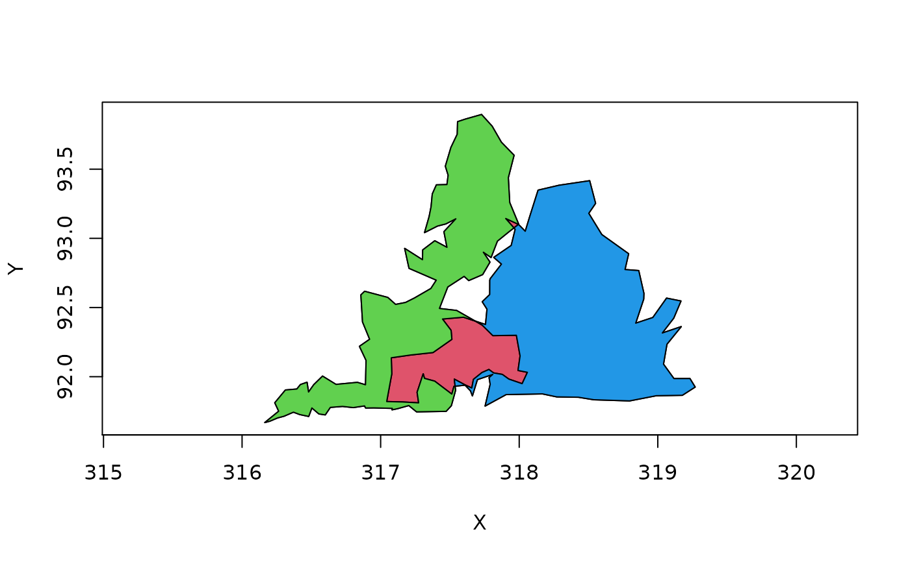
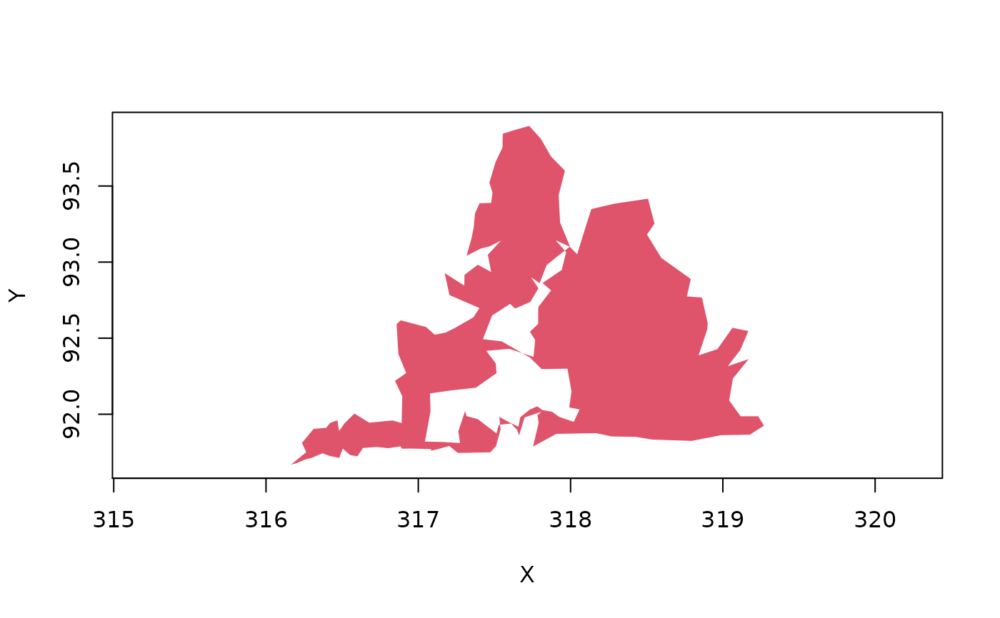
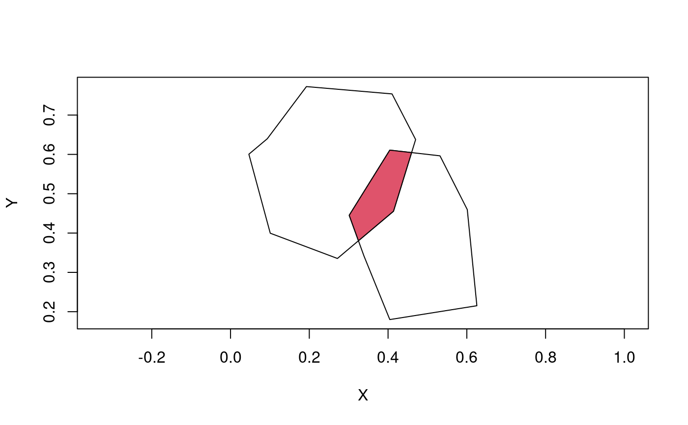

Class "gpc.poly"
class-gpc.poly.RdA class for representing polygons composed of multiple contours, some of which may be holes.
Objects from the Class
Objects can be created by calls of the form new("gpc.poly",
...) or by reading in from a file using read.polyfile.
Slots
- pts
Object of class “list”. Actually,
ptsis a list of lists with length equal to the number of contours in the"gpc.poly"object. Each element ofptsis a list of length 3 with namesx,y, andhole.xandyare vectors containing the x and y coordinates, respectively, whileholeis a logical indicating whether or not the contour is a hole.
Methods
- [
signature(x = "gpc.poly"): ...- append.poly
signature(x = "gpc.poly", y = "gpc.poly"): ...- area.poly
signature(object = "gpc.poly"): ...- coerce
signature(from = "matrix", to = "gpc.poly"): ...- coerce
signature(from = "data.frame", to = "gpc.poly"): ...- coerce
signature(from = "numeric", to = "gpc.poly"): ...- coerce
signature(from = "list", to = "gpc.poly"): ...- coerce
signature(from = "SpatialPolygons", to = "gpc.poly"): ...- coerce
signature(from = "gpc.poly", to = "matrix"): ...- coerce
signature(from = "gpc.poly", to = "numeric"): ...- coerce
signature(from = "gpc.poly", to = "SpatialPolygons"): ...- get.bbox
signature(x = "gpc.poly"): ...- get.pts
signature(object = "gpc.poly"): ...- intersect
signature(x = "gpc.poly", y = "gpc.poly"): ...- plot
signature(x = "gpc.poly"): The argumentpoly.argscan be used to pass a list of additional arguments to be passed to the underlyingpolygoncall.- scale.poly
signature(x = "gpc.poly"): ...- setdiff
signature(x = "gpc.poly", y = "gpc.poly"): ...- show
signature(object = "gpc.poly"): Scale x and y coordinates by amountxscaleandyscale. By defaultxscaleequalsyscale.- symdiff
signature(x = "gpc.poly", y = "gpc.poly"): ...- union
signature(x = "gpc.poly", y = "gpc.poly"): ...- tristrip
signature(x = "gpc.poly"): ...- triangulate
signature(x = "gpc.poly"): ...
Author
Roger D. Peng
Note
The class "gpc.poly.nohole" is identical to
"gpc.poly" except the hole flag for each contour of a
"gpc.poly.nohole" object is always FALSE.
Examples
## Make some random polygons set.seed(100) a <- cbind(rnorm(100), rnorm(100)) a <- a[chull(a), ] ## Convert `a' from matrix to "gpc.poly" a <- as(a, "gpc.poly") b <- cbind(rnorm(100), rnorm(100)) b <- as(b[chull(b), ], "gpc.poly") ## More complex polygons with an intersection p1 <- read.polyfile(system.file("poly-ex-gpc/ex-poly1.txt", package = "rgeos")) p2 <- read.polyfile(system.file("poly-ex-gpc/ex-poly2.txt", package = "rgeos")) ## Plot both polygons and highlight their intersection in red plot(append.poly(p1, p2))#> Warning: implicit list embedding of S4 objects is deprecated## Highlight the difference p1 \ p2 in green plot(setdiff(p1, p2), poly.args = list(col = 3), add = TRUE)#> Warning: implicit list embedding of S4 objects is deprecated## Highlight the difference p2 \ p1 in blue plot(setdiff(p2, p1), poly.args = list(col = 4), add = TRUE)#> Warning: implicit list embedding of S4 objects is deprecated#> Warning: implicit list embedding of S4 objects is deprecated## Take the non-intersect portions and create a new polygon ## combining the two contours p.comb <- append.poly(setdiff(p1, p2), setdiff(p2, p1))#> Warning: implicit list embedding of S4 objects is deprecated#> Warning: implicit list embedding of S4 objects is deprecated## Coerce from a matrix x <- structure(c(0.0934073560027759, 0.192713393476752, 0.410062456627342, 0.470020818875781, 0.41380985426787, 0.271408743927828, 0.100902151283831, 0.0465648854961832, 0.63981588032221, 0.772382048331416, 0.753739930955121, 0.637744533947066, 0.455466052934407, 0.335327963176065, 0.399539700805524, 0.600460299194476), .Dim = c(8, 2)) y <- structure(c(0.404441360166551, 0.338861901457321, 0.301387925052047, 0.404441360166551, 0.531852879944483, 0.60117973629424, 0.625537820957668, 0.179976985040276, 0.341542002301496, 0.445109321058688, 0.610817031070196, 0.596317606444189, 0.459608745684695, 0.215189873417722), .Dim = c(7, 2)) x1 <- as(x, "gpc.poly") y1 <- as(y, "gpc.poly") plot(append.poly(x1, y1))#> Warning: implicit list embedding of S4 objects is deprecated## Show the triangulation #plot(append.poly(x1, y1)) #triangles <- triangulate(append.poly(x1,y1)) #for (i in 0:(nrow(triangles)/3 - 1)) # polygon(triangles[3*i + 1:3,], col="lightblue")